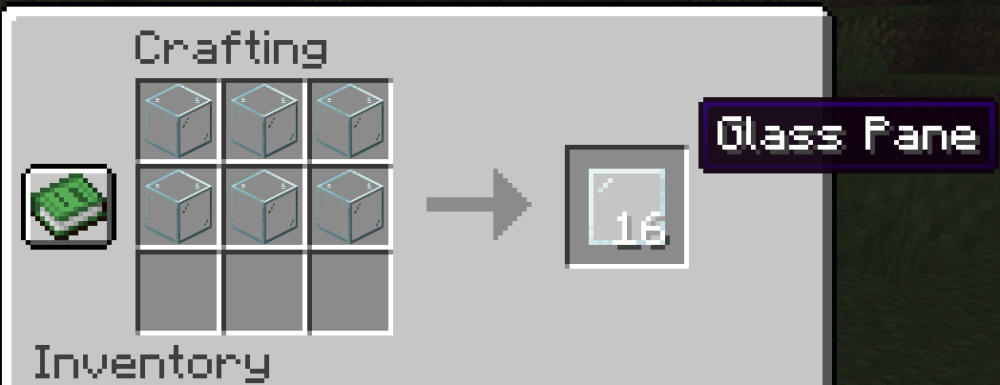
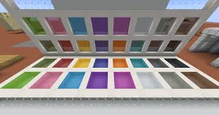

mesa de crafteo
mesa de crafteo
El panel de cristal es un bloque que se usa principalmente enla construcción de casas
Este bloque se obtiene colocando 6 bloques de cristal en una mesa de crafteo

Para recuperar el bloque se requiere cualquier herramienta con toque de seda.
Existen distintas variantes del panel de cristas, estas variantes simplemente cambia el color
Estas variantes se consiguen poniendo un panel y un tinte en una mesa de crafteo
